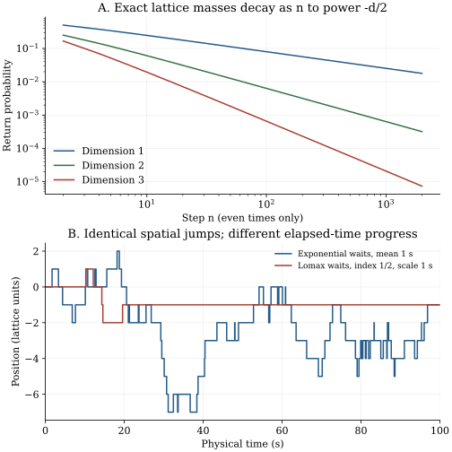

Chapter 22 · Lecture 26
Recurrence by dimension and random walk clocks
A recorded search trajectory can look trapped for two different reasons: its spatial graph may keep returning it to familiar sites, or its clock may impose long pauses between otherwise ordinary jumps. To distinguish these, first analyze a walk by its jump count, then attach elapsed waiting times. This separation preserves the geometry while exposing the information that a nonexponential clock adds to the state.
The full caption track of lecture 26 was read. Its sequence supplies lattice recurrence, Fourier Green functions, walk rescaling, and renewal clocks. One frame at 1375 seconds was inspected; the small-wave-number denominator is visible, while some equations are occluded. The exact parity factors, clock-age model, primary-source continuum distinction, numerical checks, and exercises are developed here. No independent audio review is claimed.
22.1 Fourier space retains the exact jump geometry L26 2:54
Let $Y_n$ be a walk on the integer lattice $\mathbb Z^d$, where $d\geq1$ is an integer and $n$ counts steps. Start at $Y_0=0$. Each independent jump chooses one of the $2d$ vectors $\pm e_j$ with equal probability $1/(2d)$; $e_j$ is the unit vector in coordinate direction $j$. Coordinates here are dimensionless lattice units. A physical spacing can be restored by multiplying position by $\ell$.
For Fourier variable $q=(q_1,\ldots,q_d)$ with components in $[-\pi,\pi]$, the one-step characteristic function is $\varphi(q)=d^{-1}\sum_{j=1}^d\cos q_j$. Independent sums give characteristic function $\varphi(q)^n$. Discrete Fourier inversion therefore gives the exact mass at the starting site, $u_n=(2\pi)^{-d}\int_{[-\pi,\pi]^d}\varphi(q)^n\,d^dq$. This is a lattice probability, not a continuum density at a point. The finite integration domain is a fundamental period of the lattice transform.
22.2 The low-wave-number singularity determines recurrence L26 18:17
Define the return Green function $U(z)=\sum_{n\geq0}u_nz^n$ for real $0\leq z\lt1$. Summing the uniformly convergent geometric series inside the Fourier integral yields $U(z)=(2\pi)^{-d}\int[1-z\varphi(q)]^{-1}\,d^dq$. As in chapter 21, recurrence is equivalent to $U(z)\to\infty$ as $z\uparrow1$.
The only point with $\varphi(q)=1$ on the periodic integration torus is $q=0$. Away from a neighborhood of it the $z\uparrow1$ denominator is bounded away from zero; the negative-$\varphi$ portion is uniformly bounded as well. Near zero, the cosine expansion gives $1-\varphi(q)=|q|^2/(2d)+O(|q|^4)$. Thus positive constants bound $1-\varphi(q)$ above and below by multiples of $|q|^2$ in a sufficiently small ball.
The possible divergence of the limiting Green integral is therefore that of $\int_0^\epsilon r^{d-1}r^{-2}\,dr=\int_0^\epsilon r^{d-3}\,dr$. It diverges for $d=1$ or two and converges for $d\geq3$. On the positive-$\varphi$ neighborhood monotone convergence justifies the $z\uparrow1$ integral limit; on its complement bounded convergence applies. The return renewal criterion then proves the assertion. ∎
The divergence is strongest in one dimension and logarithmic in two. In three dimensions a finite Green function gives return probability $1-1/U(1)\lt1$. Its exact value depends on the lattice geometry and transition rule; the threshold proved here does not say every graph embedded in three-dimensional space is transient. A graph confined to a line remains a line even if its coordinates are stored in three dimensions. Nondegenerate homogeneous Euclidean lattice walks and arbitrary networks require different hypotheses.
22.3 A local Gaussian approximation needs the allowed lattice cell L26 26:59
Each step reverses the parity of the sum of lattice coordinates, so $u_n=0$ at odd $n$. At even time $2m$, the leading return mass is $u_{2m}\sim2[d/(4\pi m)]^{d/2}$. The factor two is essential. To derive it, note that $|\varphi|=1$ at two points on the Fourier torus: zero and the point with all coordinates equal to $\pi$. Near zero, $\varphi(q)^{2m}\sim e^{-m|q|^2/d}$; near the second point the sign reverses but its even power has the same Gaussian contribution. The rest of the torus decays exponentially with $m$ after neighborhoods of these points are removed. Each saddle contributes $(2\pi)^{-d}\int_{\mathbb R^d}e^{-m|q|^2/d}\,d^dq=[d/(4\pi m)]^{d/2}$.
The two saddles are the Fourier expression of a spatial support constraint. At even times only one half of the integer lattice is accessible; its effective cell volume is two rather than one. A continuum Gaussian of covariance $(2m/d)I$ evaluated at zero without this correction gives half the lattice mass. In one dimension, the result reduces to $u_{2m}\sim1/\sqrt{\pi m}$; in two it is $1/(\pi m)$. Summing these tails reproduces the recurrence threshold. This local asymptotic is stronger than the central limit theorem, which concerns probabilities over scaled regions and does not by itself determine individual lattice masses.
22.4 A lattice site is not a continuum point
In planar Brownian motion, every neighborhood of a fixed point is visited repeatedly, but a specified point distinct from the start is hit with probability zero. Points are called polar when their hitting probability vanishes in this sense. Mörters–Peres, Corollary 2.26, printed page 48, establishes the point statement; their Theorem 3.20, printed page 73, gives neighborhood recurrence. These are cited results, not consequences obtained by inserting $d=2$ in the lattice mass formula.
The distinction can be understood through the probability to reach a small circle of radius $\epsilon$ before leaving a circle of radius $R$. In a planar annulus this harmonic probability is $\log(R/r)/\log(R/\epsilon)$ for starting radius $r$. At fixed outer radius $R$ it tends to zero as $\epsilon\downarrow0$. Shrinking the target to a point and removing the outer boundary are different limiting operations. A path can be dense in the sense of visiting all rationally specified open disks while avoiding any one fixed point almost surely. A two-dimensional path dimension also does not assert literal filling of the plane.
22.5 Time-change the same spatial path L26 44:02
Let $J_1,J_2,\ldots$ be independent identically distributed spatial jumps, and let $W_1,W_2,\ldots$ be independent identically distributed strictly positive waiting times, independent of all jumps. Define renewal epochs $S_n=W_1+\cdots+W_n$, with $S_0=0$, and the renewal count $N(t)=\max\{n:S_n\leq t\}$. The physical-time position is $X(t)=\sum_{j=1}^{N(t)}J_j$. The process begins with a fresh waiting interval at zero. This preparation is part of its definition.
Condition on the independent count $N(t)$. Given that count, the spatial sum has exactly its $n$-jump law, giving the mixture. Exponential waiting times have the memoryless survival $e^{-\lambda t}$; successive independent waits generate a Poisson counting process, so the displayed weights follow. Its independent future increments make position a Markov compound-Poisson process with generator $\mathcal Lg(x)=\lambda\mathbb E[g(x+J)-g(x)]$. ∎
In this renewal model, nonexponential waits generally make position alone non-Markov: the current waiting age matters. This is not a universal claim that every non-Poisson one-time count law forbids every Markov model. A time-dependent deterministic hazard can produce a time-inhomogeneous Markov process; degenerate observations can hide timing altogether. Conversely, specifying normalizable count weights separately at each time is not enough to construct consistent joint-time laws. Independent identically distributed positive waits provide that construction and ensure $S_n\to\infty$ almost surely, so there are finitely many renewals in finite time.
22.6 Waiting age is information about the future L26 1:00:01
Let $\psi(w)$ be the waiting-time density, with units inverse seconds, and let $\Psi(w)=\Pr(W\gt w)=\int_w^\infty\psi(u)\,du$ be its survival. These two functions are different objects. If the present waiting interval has already lasted age $a$, its remaining survival for a further time $t$ is a conditional probability:
The event $W\gt a+t$ is contained in $W\gt a$, so conditional probability gives the survival ratio. The probability of ending within a short additional interval $h$ is $[\Psi(a)-\Psi(a+h)]/\Psi(a)=\psi(a)h/\Psi(a)+o(h)$, proving the hazard. If $\eta(a)=\lambda$ at all ages and $\Psi(0)=1$, the differential equation $\Psi'=-\lambda\Psi$ gives $\Psi(a)=e^{-\lambda a}$. Conversely this exponential makes (22.2) equal to $e^{-\lambda t}$ at every age. ∎
For a Lomax waiting law $\Psi(w)=(1+w/\tau_0)^{-\alpha}$, with scale $\tau_0\gt0$ seconds and exponent $0\lt\alpha\lt1$, the mean wait is infinite and the hazard is $\alpha/(\tau_0+a)$. A long observed pause predicts a smaller immediate jump rate. At $\alpha=1/2$, $\tau_0=1$ second, the chance of no jump during the next second is 0.70710678 at age zero, 0.81649658 at age one second, and 0.95742711 at age ten seconds. Position alone does not encode those different forecasts.
Adding the age to position restores a Markov description for this specified renewal construction: between events, age increases at unit rate; at hazard $\eta(a)$, position jumps by the independent jump law and age resets to zero. For a smooth test function $g(x,a)$ its generator is $\mathcal Lg=\partial_ag+\eta(a)\mathbb E[g(x+J,0)-g(x,a)]$ on a suitable domain. This is a piecewise deterministic state model. The density-based hazard formula presumes absolutely continuous waiting laws; deterministic or atomic waits need boundary or measure-valued event rules rather than pretending they have an ordinary density.
An event epoch density is not a jump-count probability
The time $S_n$ of the nth renewal has density $g_n=\psi^{*n}$, a convolution of $n$ waiting densities. But the occupancy weight is $w_n(t)=\Pr(S_n\leq t\lt S_{n+1})$, which includes survival after that nth arrival. For $n\geq1$, $w_n=g_n*\Psi$, and $w_0=\Psi$. In Laplace space $\widetilde g_n=\widetilde\psi^n$, while $\widetilde w_n(s)=\widetilde\psi(s)^n[1-\widetilde\psi(s)]/s$. The extra survival factor makes $\sum_n\widetilde w_n=1/s$, as normalization requires. Omitting it turns an arrival rate density into a probability weight and breaks the position law. This distinction supplies the starting point for chapter 23's Fourier–Laplace solution.
22.7 Computational laboratory: geometry first, clocks second
The lab computes exact even-time return masses in dimensions one, two, and three from multinomial counts. In three dimensions, group the numbers of paired steps in two coordinates: the required combinatorial sum is $u_{2m}=\binom{2m}{m}6^{-2m}\sum_{k=0}^m\binom{m}{k}^2\binom{2k}{k}$. Logarithmic factorials and a logarithmic sum avoid overflow. The code checks the two-step value $1/(2d)$ and the parity-correct asymptotic at step 2,000. Its partial Green sums include time zero.
d=1: G_200=11.32604428; G_2000=35.69586130; parity-correct ratio=0.99987501 d=2: G_200=2.53452726; G_2000=3.26532131; parity-correct ratio=0.99975003 d=3: G_200=1.46990210; G_2000=1.50163700; parity-correct ratio=0.99962510 Residual survival at ages 0,1,10: 0.70710678, 0.81649658, 0.95742711
The finite sums do not prove divergence or convergence; the Green-integral argument does. The ratios test the local normalization that a naive continuum density would miss by a factor two. A second experiment attaches exponential and Lomax waits to the same sequence of 200 unbiased spatial jumps using seed 2026110826. The heavy-tailed clock can leave the walker paused for most of the displayed interval even though its jump sequence has not changed.

def lomax_residual(age, extra, scale=1.0, alpha=0.5):
if min(age, extra) < 0 or scale <= 0 or alpha <= 0:
raise ValueError("invalid age, extra time, scale, or exponent")
return ((scale+age+extra)/(scale+age))**(-alpha)
for waiting_age in (0.0, 1.0, 10.0):
print(f"{lomax_residual(waiting_age, 1.0):.8f}")This function has no file effect and computes (22.2) directly. The full lab writes JSON and the report; rerunning overwrites them and does not use the network. Generate the figure after the lab with the declared packages. A rare very large Lomax wait is an intended property, not an overflow to be silently clipped.
22.8 What a clock preserves
Independent strictly positive finite waits preserve the ordered sequence of visited spatial states over infinite time because infinitely many renewals eventually occur. They can change physical-time moments, finite-time observation probabilities, and aging. A time-zero renewal is generally not an equilibrium age preparation. Exponential waits uniquely erase age within this homogeneous renewal model, while general density-based hazards provide a larger Markov state. Lattice recurrence concerns repeated visits to sites; planar Brownian neighborhood recurrence concerns open targets and must not be stated as repeated hits of every point.
22.9 Exercises with worked solutions
Exercise 22.1 — A missing factor two (conceptual)
A continuum Gaussian approximation gives $u_{2m}\sim(4\pi m)^{-1/2}$ for the one-dimensional line walk. Diagnose the error.
Worked solution
At step $2m$, position is an even integer, so the accessible cell spacing is two. A unit-normalized continuous density must be multiplied by that spacing to approximate a single accessible mass. Thus the answer is $2/\sqrt{4\pi m}=1/\sqrt{\pi m}$. The exact binomial coefficient confirms it. Assigning the same mass approximation at odd sites also violates support: those probabilities are exactly zero. A local limit theorem must encode both the Gaussian scale and lattice periodicity.
Exercise 22.2 — Recurrence under a slower clock (conceptual)
Does replacing exponential waits by positive independent Lomax waits make a recurrent spatial walk transient?
Worked solution
No, provided each wait is finite almost surely and the renewal sum diverges. Every finite spatial jump index is eventually reached, so the same infinite sequence of sites is visited in the same order. Eventual return probabilities are preserved. The distribution of elapsed return time changes, and an infinite-mean wait can make a previously finite physical-time mean diverge. A finite observation window can show many walkers still in their first pause; that is not a change in the jump-chain recurrence classification.
Exercise 22.3 — Derive the occupancy survival factor (derive)
Derive $\widetilde w_n(s)$ from the event-epoch density and verify normalization. What goes wrong if $\widetilde\psi^n$ alone is used as the count weight?
Worked solution
For $n\geq1$, the nth renewal occurs at some $u\leq t$ with density $g_n(u)$; no next renewal occurs in the remaining time with probability $\Psi(t-u)$. Hence $w_n(t)=\int_0^tg_n(u)\Psi(t-u)\,du$. For zero renewals $w_0(t)=\Psi(t)$. Integration by parts gives $\widetilde\Psi=(1-\widetilde\psi)/s$, and convolution gives $\widetilde w_n=\widetilde\psi^n(1-\widetilde\psi)/s$ including $n=0$. Summing the geometric series yields $1/s$, the transform of one. Using $\widetilde\psi^n$ alone instead gives $1/(1-\widetilde\psi)$ and has the wrong time units and normalization.
Exercise 22.4 — Obtain the age-dependent generator (derive)
Use a short-time argument to derive the generator for the position-age state given in Section 22.6.
Worked solution
During $h$, with probability $1-\eta(a)h+o(h)$ there is no event: position remains $x$ and age advances to $a+h$. With probability $\eta(a)h+o(h)$ there is one renewal: position becomes $x+J$ and age is zero to leading order. Thus the expected change of $g$ is $h\partial_ag+\eta(a)h\mathbb E[g(x+J,0)-g(x,a)]+o(h)$. Divide by $h$ and let it vanish. The expansion assumes a regular finite hazard at the current age and negligible multiple events at that order; singular or atomic waiting laws need their own event construction.
Exercise 22.5 — Interpret partial Green sums (compute/design)
The dimension-three sum through step 2,000 is about 1.501637. Can this alone certify transience, or give an exact return probability?
Worked solution
A finite partial sum cannot certify convergence of an infinite series; even the recurrent one- and two-dimensional sums are finite at every cutoff. The Green-integral proof establishes transience. Once convergence is known, the partial sum is a lower bound on $U(1)$, so $1-1/U_{2000}$ is a lower bound on the true return probability because this function increases with $U$. An asymptotic tail estimate or rigorous tail bound is needed for a controlled numerical probability. The lab uses finite sums as checks and deliberately does not label their ratio an exact eventual-return probability.
Exercise 22.6 — An aging detector (compute/design)
A walker has already waited ten seconds under the chapter's Lomax law. Compute its hazard and probability of waiting a further second. Contrast an exponential mean-one-second clock and describe an experiment that distinguishes them.
Worked solution
The Lomax hazard is $0.5/(1+10)=1/22$ per second. The one-second residual survival is $(12/11)^{-1/2}=0.95742711$. An exponential mean-one-second clock retains hazard one per second at every age and residual survival $e^{-1}=0.36787944$. Group observed intervals by current age and compare their subsequent event frequencies, handling right censoring and using independent intervals rather than repeated correlated snapshots as independent trials. A decreasing age-conditioned event rate supports this renewal-aging mechanism more directly than a broad position histogram.
22.10 Sources and attribution
- V. Balakrishnan, IIT Madras, lecture 26, NPTEL 115106089: lattice Green function, recurrence threshold, rescaling, and renewal clock motivation.
- P. Mörters and Y. Peres, Brownian Motion, author-hosted manuscript, Corollary 2.26, printed p. 48, and Theorem 3.20, printed p. 73: planar point polarity versus neighborhood recurrence.
The Green singularity proof, parity normalization, age-state formulation, occupancy weights, exact coefficient laboratory, figure, and exercises are developed here. The random-clock mixture presumes independent spatial jumps and waiting intervals; correlated or coupled alternatives require a different renewal equation.